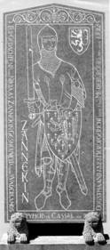

> nieuwsbrief
> 1e trimester
2008
| Bijdragen over: | Tip |
 Gedenksteen Zannekin aan de kerk van
Lampernisse
Eens te meer nadert de
jaarwisseling met rassé schreden. Voor de
penningmeester brengt dit mee om ervoor te zorgen dat de hernieuwing
van de
bijdragen andermaal vlot verloopt.
In ruil voor een
ongewijzigde basisbijdrage van 25 verzekert u
zich ook in 2007 van een abonnement op onze Zannekin Nieuwsbrief en van het reeds 30e Jaarboek
De Nederlanden extra muros. Dit nieuwe jaarboek wordt
overigens extra omvangrijk, omdat het tevens ook het Register
over de jaarboeken 21-30 zal bevatten. Als steeds hopen we
er andermaal op dat eenzelfde aantal leden spontaan deze basisbijdrage afronden
tot het ronde bedrag van 30 . Zij immers maken het ons mogelijk om
extra-initiatieven te ontwikkelen, als b.v. de publicatie van brochures
naast
de Nieuwsbrief en het Jaarboek. Bijliggend
betaalformulier
heeft slechts de bedoeling het u makkelijk te maken. De penningmeester
dankt
bij voorbaat voor een vlotte afhandeling.
Terugblik
op onze Ontmoetingsdag te Emden
Zaterdag 13 oktober 2007
organiseerde de
vereniging/stichting Zannekin haar ontmoetingsdag te Emden. Niet eerder
was de
belangstelling zo groot: 70 tot 80 mensen. Na de koffie met taart
verwees
voorzitter
Marten Heida sprak in zijn
lezing rond de Emder Synode
over de religieuze en bestuurlijke perikelen in Oost-Friesland van de
16e tot
en met de 19e eeuw. Zesduizend mensen vluchtten uit de Zuidelijke
Nederlanden
naar Emden voor godsdienstige en economische redenen. Het betrof zowel
Nederlandstaligen als Franstaligen (tot 1897 een aparte gemeente).
Verder sprak
de heer Heida over het rijksgraafschap Oost-Friesland en de diverse
graven. Ook
haalde hij de Poolse edelman Joannes a Lasco (Pools: Jan Laski: Jan van
Lask)
aan die een grote rol speelde in de reformatie in Emden. De kerkelijke
gemeente
voelde zich zelfstandig van het stadsbestuur van Emden en van het
bestuur van
Oost-Friesland.
Hedwig Voogd-Schulz,
docente Nederlands, hield een lezing
over de wederzijdse bezoeken van Groningse en Oost-Friese scholen.
Nederlands
is een facultatief vak in Oost-Friesland. Op elk van 27 scholen volgen
ongeveer
30 scholieren het vak, dus in totaal zon 1000 leerlingen. Sinds een
congres in
de jaren negentig van de twintigste eeuw wordt het vak structureel
gegeven
nadat leraren zijn opgeleid. Waarom kiezen Oost-Friese leerlingen voor
Nederlands? Op zaterdagen zijn er circa 30% Nederlanders in Leer en 30%
Oost-Friezen in de stad Groningen. In Leer wordt zelfs Koninginnedag
gevierd.
Op school krijgen de leerlingen les en worden zij goed voorbereid op
het
bezoek. Tijdens het bezoek krijgen de leerlingen praktische opdrachten
die zij
met medewerking van de plaatselijke bevolking moeten uitvoeren. De
bezoeken
halen regelmatig de regionale kranten. Na het verzorgde middagmaal in
de Faldernpoort bezocht het gezelschap de
Joannes a Lascobibliotheek (de voormalige Grote Kerk 1510-1943). De
openbare
wetenschappelijke bibliotheek bevat een grote collectie boeken vooral
over
religieuze zaken. De Poolse edelman Joannes a Lasco zou bisschop worden
maar
hij trouwde in 1540 met de Vlaamse Barbara. Hij vlucht midden 1540 naar
Oost-Friesland. Midden 1542 tot
september 1549 verblijft hij op uitnodiging van de regentes Anna
van Oldenburg, weduwe van graaf Enno II, in Emden totdat zijn houding
hem
noodzaakt te vertrekken. Later is hij weer korte tijd in Emden. In de
Joannes a
Lascobibliotheek bevindt zich het praalgraf van graaf Enno II.
Na dit bezoek leidden
De dag werd besloten met
koffie met gebak en een gezellige
nazit. Voorzitter
Op zondag 14 oktober 2007
bezocht ik aansluitend het
Ostfriesisches Landesmuseum in Emden. Dit museum dat zich direct achter
het
stadhuis bevindt geeft een uitgebreid overzicht van de geschiedenis van
Oost-Friesland en Emden. Het gaat onder andere over de dijkbouw,
invoering van
het christendom, de Friese Vrijheid, Emden als havenstad, de
Reformatie, de
handel, de schilderkunst en de wapenkamer.
Onder andere Nederlandse
vluchtelingen zorgen ervoor dat de
stad van 5000 inwoners in 1550 uitgroeit tot 20.000 inwoners in 1570.
De
Nederlandse kooplieden en zeelieden zorgen voor een stimulans van de
haven van
Emden. Na de terugkeer van veel Nederlandse vluchtelingen in de 16e
eeuw daalt
de handel in de haven van Emden. Het niveau wordt later niet meer
bereikt. De
tolerantie van de reformatietijd werd in Emden rond 1570 verdrongen
door het
calvinisme. De stad kreeg de bijnaam Genève van het noorden. In maart
1595
brak de Emdense revolutie uit. De calvinistische stad bereikte
politieke
autonomie ten koste van de lutherse graven.
Het stadhuis in Emden is
gebouwd door de Nederlandse
bouwmeester Laurenz van Steenwinkel en de Antwerpse architect Cornelis
Floris de
Vriendt naar voorbeeld van het stadhuis van Antwerpen (1564). Het werd
in
De schilderkunst werd door
de Nederlandse vluchtelingen
beïnvloed. De invloed bleef ook na de terugkeer van de vluchtelingen
bestaan.
De boekdrukkunst werd ontstond in Emden door de komst van drie
boekdrukkers uit
de Nederlanden.
De Dr. Ferdinand
Snellaertprijs, ingesteld door de Vereniging van
Vlaams-nationale auteurs, valt in 2007 te beurt aan onze
jaarboekmedewerker de
Z.E.H.
Kalender
Davidsfonds Frans-Vlaanderen
De wandkalender
2008 van het Davidsfonds Frans-Vlaanderen is al van de pers en verrast
andermaal met een aantal unieke diabeelden van ons Frans-Vlaamse
culturele
erfgoed. Op het vlak van monumenten maken we, onder het thema Een jaar in de Franse Nederlanden,
kennis met de vestingmuren van Sint-Winoksbergen, de kerk van Rubroek,
de
Sint-Mulderskapel, de Sint-Godelievekapel, de puinen van de
Sint-Bertijnsabdijkerk
te Sint-Omaars, en een kleinood uit de kerk van Bollezele. Als
extraatje vindt
de lezer achterop de maandbladen een calendarium
over een aantal Zuid-Vlaamse heiligen die in de respectievelijke
maanden aan
bod komen.
Graag vermelden
wij hieronder de coördinaten voor het bestellen deze nieuwe kalender:
het
rekeningnummer waarop de 7,50 dienen betaald te worden luidt:
000-1529169-61. Het telefoonnummer van
Zijn e-postadres
luidt: janvanormelingen@yahoo.com
Het oude
bondgenootschap (1338 1638)
De Prins van
Wales en zijn Vlaamse strijdkreten,
Hou moed! Ick dien! (1338 tot vandaag)
Willy
Alenus, Oostende
Ons
artikel De Franse Nederlanden
voltooien het Franse Hexagon, dat in mei 2007 verscheen in het 29e
jaarboek
De Nederlanden Extra Muros en het
vervolg op die bijdrage dat verscheen op 16 september
Laat
ons onmiddellijk stellen dat dit
belangrijke hoofdstuk geschiedenis begint in 1338 en dat wij het op
willekeurige wijze laten eindigen in 1638, met de datum van de geboorte
van een
van onze grootste, levensbedreigende vijanden, koning Lodewijk XIV van
Frankrijk, le Roi Soleil, de Zonne-koning.
The Auld Alliance
(Frankrijk-Schotland)
(1295 1560)
Meerdere
historici laten het Engels-Vlaamse
Oude Bondgenootschap, waarbij men het eens is over het beginjaar
1338,
voorafgaan door een periode die men zou kunnen bestempelen als het
grote in de
steek laten van Vlaanderen door Engeland, zeker van 1299 tot 1338.
Deze
afwezigheid van bijstand aan een buurman in levensgevaar is bewezen ;
in
Maar
koning Edward I (123912721307) was
geen staatshoofd dat zijn natuurlijke bondgenoten in de steek liet.
Zijn
geopolitieke prioriteiten waren uiteraard de verovering van Wales (die
lukte)
en de verovering van Schotland (die mislukte en uiteindelijk zou moeten
wachten
tot 1603).
Voor de
weetgierige lezer volstaat het André
Maurois, Barbara Tuchman en Simon Schama er nog eens op na te lezen.1.
Maar het is Maurice Druon, weliswaar een romanschrijver, die vanuit de
Franse
gezichtshoek de veertiende eeuw een brandmerk meegeeft: Ce siècle
porte un
nom,
Maar
Schotland vocht al eeuwen tegen het naar
het noorden oprukkende Engeland, - het vocht voor zijn eigenheid en
zijn
vrijheid en in de 13e en 14e eeuw was die strijd gericht tegen het
Edwardiaanse
Engeland. Een Franse geschiedschrijver had het ooit (de
Guldensporenslag was
een uitzondering) over la guerre franco-anglaise par Ecossais et
Flamands interposés.
The Auld
Alliance (
Het
Edwardiaanse Engeland (1272 1377)
Een
opstand in Wales onder Llewelyn, die in
1276 was begonnen, eindigde met de inlijving van Wales bij Engeland
(1284). In
dat jaar werd de latere Edward II geboren, de Engelse kroonprins die,
als
eerste, de titel Prins van Wales kreeg.
De
toekomstige koning Edward III werd geboren
in Windsor Castle, op 13 november 1312 ; hij zou ter ziele gaan in
Londen, op
21 juni 1377. Hij was koning van Engeland van 1327 tot 1377, een record
dat tot
nu toe nog maar alleen door koningin Victoria werd gebroken (18371901)
en door
koningin Elizabeth II (sinds 1952). Hij was de oudste zoon van koning
Edward II
en van Isabella, de dochter van koning Filips de Schone van Frankrijk
en
aartsvijand van Vlaanderen. Op 1 februari 1327 werd Edward III, dus als
veertienjarige, tot koning gekroond, maar in de praktijk oefenden
Edwards
moeder en haar minnaar, Roger Mortimer, het gezag uit in het
Angelsaksische
koninkrijk. Edward, die op 24 januari 1328 met Philippa van Henegouwen
in het
huwelijk was getreden, liet Mortimer in 1330 gevangennemen en
terechtstellen ;
zijn moeder, Isabella, werd voor de rest van haar leven opgesloten in
Castle
Rising. Edwards bewind, zeker tot 1338, het beginjaar van de
Honderdjarige Oorlog
(13381453), werd vooral in beslag genomen door de veldtochten tegen
Schotland.
Ondanks militaire successen, die nooit konden worden afgerond,
enerzijds door
de Schotse vechtlust en het berglandschap dat geen Engelse
cavaleriecharges
toeliet en dat anderzijds van de Schotse guerrilla bijna een kinderspel
maakte,
moest Edward in 1357, bij Verdrag van Berwick, in arren moede, de
Schotse
zelfstandigheid erkennen.
In 1328
waren ook Filips VI van Valois, zoon
van Karel van Valois, een broer van Filips de Schone en Edward III, een
kleinzoon van Filips de Schone, beiden kandidaat geworden voor de
opvolging van
Karel IV, de derde kinderloze zoon van Filips de Schone - dit zijn de
zonen die
daarom en niet alleen door Maurice Druon, les Rois maudits, de
vervloekte
koningen worden genoemd.
In het
graafschap Vlaanderen was er, in illo
tempore, een staat van oorlog
ontstaan tussen de graaf, Lodewijk van Nevers, leenman van de koning
van
Frankrijk (en trouw aan zijn feodale eed) en de Vlamingen wier welstand
voor
een groot deel afhankelijk was van de import van Engelse wol. LAngleterre agricole et
Maar de
toentertijdse Vlamingen dachten een
oplossing te hebben gevonden, tegelijkertijd voor hun commerciële
problemen
(trouw aan Engeland) en hun feodale problemen (trouw aan Frankrijk) -
vermits
Edward III de zoon was van Isabella van Frankrijk en bijgevolg de
kleinzoon van
Filips IV de Schone, stelden zij alles in het werk om Edward III te
overhalen
de Franse kroon op te eisen. Aanvankelijk weigerde Edward III, mede
omwille van
zijn problemen met Schotland en zijn bekommernis om zijn leengoederen
in Zuid-
Frankrijk.
Uit vrees voor Franse
confiscatie van dit gebied en wegens de Franse interventies in
Vlaanderen en
Schotland twee territoria waar Engeland politiek en economisch vrije
armslag
wenste te behouden nam Edward uiteindelijk in 1337 het besluit zijn
aanspraken op de Franse troon met militaire middelen alsnog hard te
maken.
Filips VI confisqueerde toen Guyenne. Dit werd aanleiding tot een reeks
van
Engelse militaire operaties op het continent.
The
Olde Alliance (Engeland - Vlaanderen) - (1338 1638)
Voor Jan Modaal moet het
meer dan de helft van de tijd een gruwelperiode zijn geweest, maar
bekeken als
docudrama, wat het voor de heersende standen en klassen maar al te vaak
ook
was, heeft het grand spectacle-allures. Tot vandaag lopen
Groot-Brittannië en
Royalty-media warm voor de prins van Wales en zijn Vlaamse strijdkreten
(Hou
moed Ick Dien) en voor de Orde van de Kousenband (Honni soit qui
mal y
pense); en voor de dramatis personae
aan wie wij die happenings te
danken hebben, kan de belangstelling nog altijd niet stuk - het gaat om
koning
Edward III, zijn zoon Edward van Woodstock, d.i. de Zwarte Prins,
tevens de
derde prins van Wales en last but not
least Johanna, the fair maid of
Kent, van wie Froissart zei, in de Engelse vertaling, "the most
beautiful woman in all the realm of England, and the most loving". Deze
nog altijd populaire evenementen hadden plaats, van 1337 tot
Om over geschikte
landingsplaatsen te beschikken ten noorden van de rivier Aa en de
noodzakelijke
bondgenootschappen, kwam Engeland allianties sluiten met Vlaanderen,
Brabant en
de Duitse keizer. In 1338 landde koning Edward III, samen met de Zwarte
Prins
en beschermd door zijn "household division", een half dozijn
lijfwachten-regimenten, in de Vlaamse havens Antwerpen, Brugge en
Sluis,
mogelijk ook in slechts één van die natuurlijke, Vlaamse
landingsplaatsen. Daar
werd de Engelse koning (die voor de Vlamingen ook de wettige koning van
Frankrijk was), opgewacht door het feitelijke staatshoofd van
Vlaanderen, Jacob
van Artevelde 3 en zijn gevolg.
Wij openen een
parenthesis met betrekking tot de derde prins van Wales. Hij is nooit
koning
Edward IV geworden omdat hij vroeger stierf dan zijn vader. Naast Prins van
Wales was hij ook Hertog van Guyenne.
In die laatste hoedanigheid was hij een leenman van de Franse koning.
Zijn
bijnaam heeft hij te danken aan de kleur van zijn wapenuitrusting. Voor
ons is
belangrijk dat Edward de twee Vlaamse wapenspreuken in zijn blazoen
voerde.
Meerdere historici vermelden dat de Zwarte Prins, in de loop van zijn
turbulente levenswandel, vermoedelijk in Vlaanderen
had verbleven. Wij zijn tot de
volgende conclusie gekomen,
Volkenrechtelijk
stoelt de Oude Alliantie (Engeland Vlaanderen) op twee internationale
overeenkomsten, 1. op het verdrag van Koblenz (1338), ter bezegeling
van de
afspraken van Herk-de-Stad, tussen koning Edward III, keizer Lodewijk
IV de
Beier, hertog Jan III van Brabant en de graaf van Loon, Diederik van
Heinsberg;
en 2. het Engels-Vlaams economische en militaire akkoord (1340), ten
tijde van
de kroning, in Gent, van Edward III tot koning van Frankrijk en het
aanbieden
van de grafelijke kroon van Vlaanderen aan de tienjarige Edward van
Woodstock,
prins van Wales. Hou moed Ick dien.
Probleem
daarbij is dat Woodstock toen nog maar tien jaar oud was. Maar kan men
van een
krijgsheer, die als zestienjarige, in 1346, bij de slag van Crécy, het
Franse
ridderleger een van zijn grootste nederlagen toediende, geen daden
veronderstellen die niet thuis horen bij de gewone sterveling? Andere
historici
vermelden de Vlaamse strijdkreten ter gelegenheid van de eveneens door
de thans
zesentwintigjarige Woodstock behaalde overwinning van Poitiers (1356).
De meningen
over de verdiensten van de prins zijn verdeeld. Bij de ridders in zijn
tijd was
Edward zeer geliefd. Sir John Chandos, de
Heraut, sprak over de regeerperiode van de Prins in
Zuid-Frankrijk
als van "zeven jaren van vreugde, vrede en plezier", terwijl de prins
in werkelijkheid een verkwistend bewind, ja bij wijlen zelfs een
schrikbewind
had gevoerd. De prins had het platteland laten afschuimen door zijn
soldateska
en had zware belastingen opgelegd o.m. om een enorme hofhouding en een
permanent gedekte tafel voor minimum 400 gasten te onderhouden. In 1367
waren de edelen van Gascogne
tegen hem en zijn belastingen in opstand gekomen. De prins was
misschien een
toonbeeld van ridderlijk gedrag, zeker in de ogen van de Vlamingen,
maar van
behoorlijk bestuur, staathuishoudkunde of van begrip voor de noden van
de
burgers die niet tot zijn eigen ridderstand behoorden, had hij
alleszins geen
kaas gegeten.
Woodstock stond
evenwel te zijner tijd bekend als een zeer kundig veldheer. Zijn eerste
overwinning in de Slag bij Crécy
en zijn tweede overwinning in de
Slag bij Poitiers werden reeds vernoemd, bij deze laatste slaagde hij
erin de
Franse koning, Jan II
gevangen te nemen. In 1362
werd hij gekroond als
Hertog van Aquitanië.
Hij was niet geliefd, in de eerste plaats vanwege
de zware belastingen die hij liet heffen. De stad Limoges
kwam daarom in 1370
tegen hem in opstand. Na deze revolte onderdrukt te hebben, zou hij
3.000
burgers hebben laten halsrechten om een voorbeeld te stellen. Het gruwelijke
gezegde, Il faut les exterminer pour leur
apprendre à vivre, zou uit die tijd stammen.
Vooraleer hij zijn vader
Edward III had
kunnen opvolgen, stierf Woodstock aan dysenterie
of mogelijk ook aan de gevolgen van een ontstoken wonde, die hij opliep
in een
veldtocht in Spanje
(1376). Hij werd begraven in de kathedraal van
Canterbury. Zijn zoon
volgde zijn grootvader op als Richard II
(1377-1399).
1338 Edward III,
van Gent naar Leuven
en naar Herk-de- Stad
Hoe lang Edward III in
1338 op het vasteland verbleef, is ons niet precies bekend. De volgende
data
werden in de kronieken teruggevonden: op 16 juli verliet Edward III
met zijn
vloot de haven van Orwell; op 22 juli bereikten de schepen die de
Westerschelde
waren opgevaren de haven van Antwerpen; op 15 augustus was Edward III
reeds in
Mechelen; van 23 juli tot 15 augustus moet hij zijn bivakken hebben
opgeslagen
in Leuven en in Herk-de-Stad; omstreeks 16 augustus moet Edward III
Brabant en
Loon hebben verlaten, want op 30 augustus wordt zijn aanwezigheid vermeld in Niederwerth-am-Rhein, ten noorden
van Koblenz; op 5 september, bereikte de Engelse koning Koblenz, waar
het
verdrag van Koblenz werd bezegeld met het heiliges
römisches Reich deutscher Nation (wij vermijden de Nederlandse vertaling,
omdat
Rooms een religieuze connotatie heeft, die een verkeerd beeld geeft).
Belangrijker dan de
stop-over in Leuven was het einddoel van de reis op het vasteland
gewest, met
name Koblenz en Herk- de- Stad, een goede stede van het graafschap Loon
(dat
niet vòòr 1365 zijn zelfstandigheid zou verliezen aan het prinsbisdom
Luik). De
graaf van Loon was een leenman van de keizer.
Maar Edward III had
Herk-de-Stad, waar hij de Duitse keizer had gevraagd hem tegemoet te
komen,
zorgvuldig uitgekozen en ziehier waarom. Herk-de-Stad was weliswaar
terre
dEmpire, maar noch de graaf van Loon, noch de prins-bisschop van Luik
waren
keurvorsten (électeurs palatins), d.z. de rijksvorsten die, bij de
dood van
de keizer-titularis, zijn opvolger moesten kiezen, uiteraard uit de
schare
gegadigde rijksvorsten die voor de vakante troon kandideerden.
Sommige historici (William
Willcox), speculeren dat Edward III Herk-de-Stad heeft uitgekozen omdat
het
halfweg is gelegen tussen het Noordzeestrand en Koblenz (4 à
De keizer, hier in casu
Lodewijk IV, bijgenaamd de Beier (°München, 1 april 1283 - Fürstenfeld,
11 oktober 1347), kwam niet met lege handen, maar hij zou ook niet met
lege
handen terugreizen naar de Rijn, of naar zijn vaderland.
Gelukkig zijn
de archieven van Herk-de-Stad voor een groot deel bewaard gebleven,
zodat wij
niet zo slecht zijn ingelicht aangaande deze aanloopfase tot de
Honderdjarige
Oorlog. Deze belangrijke episode wordt trouwens, bij ons weten, slechts
door
één of twee historici vermeld, waaronder professor Pieter Geyl, die
uitsluitend
Koblenz als ontmoetingsplaats opgeeft en Herk weglaat.
De dramatis personae zijn gekend. Gastheer was uiteraard de graaf van
Loon,
Diederik van Heinsberg (1300-1361), wiens troon weliswaar werd betwist.4
Edward III werd, conform zijn verlangen, door de keizer aangesteld als
vicaris van het heiliges römisches
Reich, deutscher Nation. Dat gebeurde in het domus bladorum, dat
later in
de kronieken als korenhuis wordt aangeduid.
De toekenning
van de titel van vicaris door de keizer gaf koning Edward III het
recht om,
iets wat hij dan ook deed, gewapende milities mits betaling op te
vorderen,
milities die dan moesten worden geleverd door de baanderheren
(baronnen,
graven, hertogen). De kosten van soldij en onderhoud van deze
landsknechten
liepen echter zo hoog op dat de koning zou zijn gedwongen geworden zijn
kroon
in onderpand te geven, als we Willcox mogen geloven.
1339 1340 De
Vlaams-
Engelse oorlog tegen Frankrijk
Wij nemen aan
dat Edward III, na de zomer van 1338, veilig en wel, met zijn gevolg en
zijn
Household Division, de witte klippen van Dover heeft bereikt. Begin
februari
1339 vluchtte graaf Lodewijk van Nevers, die zich bij de heerschappij
over
Vlaanderen van Jacob van Artevelde wel moest neerleggen, naar
Sint-Omaars en in
december 1339 zou hij voorgoed zijn graafschap verlaten. Lodewijk van
Nevers
sneuvelde in Crécy, trouw aan zijn feodale eed.
De zeeslag van Sluis had
plaats op 24 juni 1340 tussen de gecombineerde Vlaams-Engelse vloot en
de
marine van de koning van Frankrijk, die vandaag nog altijd
Eén van de Franse
admiraals moet zijn gesneuveld in de strijd, terwijl de andere werd
opgeknoopt
aan de mast van zijn admiraalschip. De razernij van de (Vlaamse)
overwinnaars
moet de bovenhand hebben gehaald, want het was een middeleeuwse
gewoonte een
krijgsgevangene van standing te laten leven en hem later uit te leveren
aan
zijn familie, mits betaling van het losgeld.
Het begin van de
Honderdjarige Oorlog werd dus gekenmerkt door het sluiten van
bondgenootschappen en Engelse overwinningen bij Sluis (1340), Crécy
(1346) en
Poitiers (1356). Op 4 augustus 1347 werd de vesting Calais veroverd.
Na Poitiers maakte
Frankrijk een diepe crisis door (de pestepidemie van 1350; plunderende
legerbenden; munt- devaluaties). De algemene ontstemming van de
bevolking
leidde tot onrust. In het kader van de Statenvergaderingen van 1355,
ten tijde
van een invasie in Zuidwest-Frankrijk door Edward van Woodstock, eiste
de derde
stand voor het eerst tegenprestaties voor de beden (belastingen), die
voortaan
slechts na instemming van de Staten mochten worden geheven. Pas
dimposition
sans représentation. Op de Staten-Generaal van 1356 eiste de burgerij,
onder
leiding van Étienne Marcel, prévôt des marchands van Parijs, het
vervangen van
de koninklijke raadsheren door een college van leden van de Staten. Dit
verzet
culmineerde in het opstellen van een Grande Ordonnance (controle op de
koning)
in 1357. Nadat in 1358 ook de boeren in opstand waren gekomen (de
jacquerie),
wist de dynastie haar gezag te herstellen. Dit verleende haar een
sterkere
positie bij de onderhandelingen die geleid hebben tot het Verdrag van
Brétigny
(8 mei 1360), waarbij Edward afzag van de Franse kroon en de Franse
vorst
Aquitanië, Ponthieu en Calais afstond. Te Calais werd in oktober van
dat jaar
deze vrede bevestigd. Onder Karel V (13641380) kon Frankrijk beginnen
te
denken aan revanche. Dankzij zijn Connétable du Guesclin wist Karel V
het
grootste deel van het door de Engelsen bezette gebied te heroveren.
Bretagne,
bondgenoot van Engeland, sedert 1066 (slag bij Hastings), kon hij
echter niet
onder controle krijgen.
Honni soit qui mal
y pense
De
verovering van Calais, op 4 augustus 1347, is een vaststaand feit. Dat deze verovering gepaard ging met het bal van
de overwinnaar stemt overeen met de adellijke en feodale gewoonten van
die
tijd. Dat koning Edward III de dames ten dans leidde, is eveneens
conform met
wat de Vlamingen de geplogenheden noemen. Was Edward van Woodstock,
toen 17
jaar oud, op het bal aanwezig? En Johanna, gravin van Kent, die toen
bijna 19
jaar was - zij werd geboren op 29 september 1328, - en zonder wie alle
feiten
(geschiedenis) en later ontstane legenden, toch moeilijk aan mekaar
kunnen
worden gebreid, was zij present?
Johanna
van Kent was inderdaad de beroemde "Fair Maid of Kent" en de
Henegouwse, eveneens beroemde kroniekschrijver Froissart, noemt haar, in de Engelse
versie,
"the most beautiful woman in all the realm of England, and the most
loving." Zonder haar aanwezigheid in Calais, zonder la carole te
dansen
met de koning, die trouwens haar neef was, zonder het verlies, tijdens
het
dansen, van haar kousenband en zonder het commentaar van haar partner:
Honni
soit qui mal y pense (Schande over hem die hier kwaad over denkt),
waar
staan wij met onze geschiedenis?
Wie al een
oorlog heeft meegemaakt weet dat deze gepaard gaat met tränenfeuchte
Romantik. Zo ook de Orde van de
Kousenband, die echt bestaat (The Most Noble Order of the Garter) en
die
inderdaad in 1347 werd ingesteld door koning Edward III. Het is vandaag
nog
altijd de grote Britse ridderorde.
Johanna van
Kent was zeker geen doetje. Op twaalfjarige leeftijd (1340), trouwde zij in het geheim
met Thomas
Holland
of Broughton, zonder de
voorafgaande koninklijke toestemming. Gedurende de volgende winter (1341), terwijl Holland uitlandig
was, werd
zij door haar familie gedwongen te trouwen met William
Montacute, de zoon en erfgenaam van de
1e graaf van
Salisbury. Johanna vreesde dat het bekendmaken van haar eerste huwelijk
met
Holland, de terechtstelling van haar Thomas wegens verraad als gevolg
zou
hebben en daarom bewaarde zij het stilzwijgen. Misschien was zij ook de
mening
toegedaan dat haar eerste huwelijk ongeldig was - in feite leefde zij
in
bigamie.
Maar aangezien
in Calais, in augustus 1347, van de danspartner van koning Edward III,
die tijdens
het feest een kousenband verloor, alleen met zekerheid is geweten dat
het de
gravin van Salisbury was, is dat voor ons voldoende om te besluiten dat
Johanna
van Kent, lady Montacute, vrouw van de 2e graaf van Salisbury, wel
degelijk aan
de basis ligt van de Orde van de kousenband.
1
André MAUROIS, Histoire dAngleterre
(1937); Barbara TUCHMAN, A Distant Mirror
The Calamitous Fourteenth Century
(1978); Simon SCHAMA, A History of
Britain (2000 2002); Maurice DRUON, Les Rois Maudits, Le Roi de Fer
(1950
1960).
2
ZANNEKIN, Nicolaas (Kassel, Zuid-Vlaanderen, 23
aug. 1328), leidde de opstand van de
Vlaamse kuststreek tegen graaf Lodewijk van Nevers (13231328). De
opstandige
Kerels van Vlaanderen bestreden de grafelijke baljuws en brandschatten
de
baronnen die trouw bleven aan de graaf. Zannekin slaagde erin een
aantal steden
te veroveren. Nu kwam Karel de Schone tussenbeide ten gunste van de
graaf (18
febr.1326). De Vrede van Arques (19 april 1326) maakte voorlopig een
einde aan
de onlusten. Zannekin kreeg nu steun van Jacob Peyt en van Willem de
Deken,
co-burgemeester van Brugge, die zonder succes hulp ging vragen bij
Edward III.
Een sterk Frans leger versloeg in de Slag bij Kassel de Kerels van
Vlaanderen,
afkomstig uit de kasselrijen Veurne, Sint-Winoksbergen, Bourbourg,
Kassel en
Belle. Zannekin sneuvelde en de opstand werd met de traditionele
wreedheid door
adel en handlangers neergeslagen.
3
ARTEVELDE, Jacob van (°Gent, ca. 1290 Gent,
17 juli 1345), Vlaams
volksleider en staatsman. Toen Lodewijk van Nevers, graaf van
Vlaanderen, in de
strijd tussen de Franse koning Filips VI van Valois en de Engelse
koning Edward
III, partij koos voor zijn Franse leenheer, verbood Edward III, op 12
augustus
1336 de uitvoer van wol naar Vlaanderen. Deze maatregel had
werkloosheid en
bijgevolg armoede tot gevolg, waartegen het volk in opstand kwam. Jacob
van
Artevelde was de vooraanstaande figuur op de volksvergadering van 28
december
1337 te Gent en op 3 januari 1338 werd een revolutionair bewind van
vijf
hoofdmannen aangesteld, waarvan hij de feitelijke leiding had. In juni
1338,
d.i. één maand voor het sluiten van het bondgenootschap dat toen nog niet olde maar uiteraard
nog new was, werd het
gezag van Jacob van Artevelde door het hele graafschap erkend.
4
Bij het kinderloos overlijden van graaf Lodewijk IV
(1336) ontstonden de Loonse Successie-oorlogen. Met de hulp van Jan III
van
Brabant kon Diederik van Heinsberg, Lodewijks neef, zich als erfgenaam
doen
erkennen, maar bij diens, eveneens kinderloos, overlijden (1361) laaide
de
strijd met de prins-bisschop van Luik weer op. Twee neven van Diederik,
Godfried van Dalembroek en Arnold van Rummen, werden door de
prins-bisschop van
Luik verslagen en in 1366 werd Loon definitief bij het prinsbisdom Luik
ingelijfd, weliswaar als autonoom (confederaal) graafschap ; de
prins-bisschop
was tweemaal staatshoofd, eerst van Luik, dan van Loon.
Een reis door het beloofde land
In
1903 schreef de Franstalige journalist Auguste de Winne Door
Arm Vlaanderen, een klassiek verslag van een reis langs gaten
van verdriet waar armoede, hongersnood, analfabetisme en uitbuiting
welig
tieren. Honderd jaar later maakt Pascal Verbeken de reis in de andere
richting.
In Arm Wallonië. Een reis door het
beloofde land gaat Verbeken on the
road, dwars door het platteland van Waals-Brabant en verder langs
de oude
industriële as van de Borinage,
Pascal
Verbeken neemt ons mee in zijn uitvoerig gedocumenteerde reis door
Wallonië.
Hij voert gesprekken met tientallen Walen van verschillende afkomst. De
situatie verschilt per streek, per stad en per wijk. Sommige wijken
zijn in een
sociaal isolement terechtgekomen. De werkloosheid is hoog en gaat over
van
generatie op generatie. De PS scoort nog goed daar zij de arbeider op
haar
wijze weet te binden. Toch is er veel kritiek te horen. Zonder
programma en
aansprekende leider weet het Front National toch hier en daar aardig
wat
stemmen te halen. De meningen verschillen of de PS goed zal blijven
scoren en
of het Front National met een programma en een aansprekende leider wel
een
aanzienlijk deel van de stemmen zal weten te halen. Inmiddels is de
liberale MR
de grootste partij in Wallonië. Vele Vlamingen zijn naar Wallonië
vertrokken om
daar te werken en velen zijn gebleven. Lang niet altijd ging dat
gemakkelijk.
Toch paste men zich snel aan.
Regelmatig
maakt Pascal Verbeken vergelijkingen met de situatie in Vlaanderen een
eeuw
eerder. Hoewel de arbeidsomstandigheden in Wallonië zwaar waren, was de
situatie beter dan in Vlaanderen.
Tenslotte
neem ik een naar mijns inziens kenmerkend gedeelte over. Olivier van
Damme uit
Hij
denkt aan de ludieke actie van de N-VA, die met busjes nepgeld naar
de
scheepslift Strépy-Thieu trok, vijf kilometer hiervandaan, om de
financiële
solidariteitstransfers van Vlaanderen naar Wallonië te hekelen. De
keuze van de
plaats was op zijn minst merkwaardig, uitgerekend in een belangrijk
centrum van
de Vlaamse economische migratie naar Wallonië, waar duizenden gezinnen
nog met
hun Vlaamse geschiedenis leven. Olivier schudt het hoofd. De mensen
begrepen
er niets van. Wat hebben we hun ooit misdaan? Waar komt zoveel dedain
vandaan?
Hoe kunnen ze zo blind zijn voor hun eigen verleden? Weet u wat de
tragiek van
Wallonië is? Toen we nog rijk waren, was de hele wereld onze vriend.
Uit de
vier windstreken kwamen ze hiernaartoe om mee te bouwen aan die
moderne,
welvarende samenleving. Maar sinds we in de rats zitten, moet niemand
ons nog.
Zo gaat het ook met mensen die in de problemen zitten: al hun vrienden
zijn
opeens verdwenen. De rattachisten van
het Rassemblement Wallonie-France hopen op een aanhechting bij
Frankrijk, maar
de Fransen zitten niet op ons te wachten. Voor Parijs zijn we een
economisch
rampgebied. Anderen geloven in een groot francofoon gebied met Brussel
erbij,
maar ook de Brusselaars moeten ons niet. En de Vlamingen, met wie we
het meest
gemeen hebben, geven ons nog een beetje overlevingsgeld, terwijl ze ons
het
liefst meteen zouden laten vallen. We staan helemaal alleen. Arm
Wallonië.
______________________
N.a.v.
Pascal Verbeken, Arm Wallonië. Een reis
door het beloofde land, Meulenhoff/Manteau, ISBN 978 90 8542 072 9,
2007,
296 blz.
2007 was voor de
Stichting Zannekin een voortreffelijk jaar. De commentaren over het
Jaarboek 29
gingen van heel degelijk tot uitstekend, op enkele luttele kritische
bedenkingen na. De activiteiten werden druk bijgewoond. Kevelaer,
In 2008 trekken wij
zuidwaarts naar Luxemburg, Namen en/of Henegouwen en oostwaarts voor
een
meerdaagse reis naar Duitsland, Polen en een brokje Rusland, namelijk
het door
Rusland geannexeerd deel van Oost-Pruisen. Uiteraard verneemt u
hierover meer
in een volgende Nieuwsbrief.
Wat bij de
Zannekin-leden en sympathisanten steeds meer opvalt, is het groeiende
"thuisgevoel" in de gebieden, die de Stichting Zannekin ter harte
neemt. Waar hoor ik thuis? Dat dacht eveneens de dichter uit Kevelaer
Theodor
Bergmann (1868-1948), waarvan wij hier in Kävels Platt een
heimatgedicht
afdrukken.
Wor hör ek thüss?
1
3
Wor hör ek thüss
kent gej min Land?
Wor gärn de
Lüij en oapen Hand
Gän Baerge
schnejbelaeje,
In Not de
Noaber reike,
Gän driewend Water
träckt en Band
Foer Gott on Kerk on
Vaderland
Voerbej an grote
Staeje:
Noch
fass ston,
as de Eike
Dor, wor de Nirs
doert Flackland gätt
Wor maenngen
Drömer, maennge Sock
Wor in dem Baend
et Maisüt stätt
So gut
es, as den
andern ok,
On wor de
Keckfoars quakt in Lüß,
Wor saelde Stritt
en grot Gedrüß,
Dor hör ek thüß.
Dor hör
ek thüß
2
4
Wor op de Heij de
Loewrek sengt,
Pries gej ow
Land mar
allemoal
Den Haas sprengt
doer de Schmeele,
In Nord, Ost,
Süd en Weste,
Wor ons de ricke
Sägen brengt
Ok
maennge grote Noet es hoal
De Aerbeijshand
voll Schweele,
Min
Laendche es et beste!
Wor in et Koarn en
Klappros droemt,
Hier stond min
Wieg, hier lüjt mej ok
Van Faeld on Weije
rond ömsoemt
So Gott well, eins de
Dojeklock
So frindlek roest
et Burenhüß,
Dann
schrieft mej op et steene Krüß:
Dor hör ek thüß.
Hier
hört hän
thüß!
De Stichting wenst u
een voorspoedig 2008
De Zavelberg Edouard Michielsstraat 51
B - 1180 UKKEL / Brussel